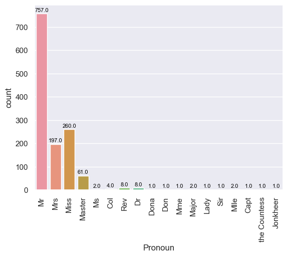

import pandas as pd
import matplotlib.pyplot as plt
import seaborn as sns
test = pd.read_csv('test.csv')
train = pd.read_csv('train.csv')
gender_submission = pd.read_csv('gender_submission.csv')Configuração de dados
# Função para promover agilidade em analises.
def analise(coluna):
# Transformando lista de constantes únicas e suas quantidades em string.
constantes_unicas = ''
for i in range(len(list(coluna.value_counts()))):
if (i == 0):
constantes_unicas += str(list(coluna.value_counts())[i]) + ' "' + str(list(coluna.value_counts().index)[i]) + '",'
elif (i == len(coluna.unique()) - 1):
constantes_unicas += ' ' + str(list(coluna.value_counts())[i]) + ' "' + str(list(coluna.value_counts().index)[i]) + '"'
else:
constantes_unicas += ' ' + str(list(coluna.value_counts())[i]) + ' "' + str(list(coluna.value_counts().index)[i]) + '",'
# Análise dos dados
print(f'Existem {coluna.nunique()} constantes únicas que são {constantes_unicas} e {coluna.isna().sum()} dados faltantes.')# Fazendo diferenciação e união de planilhas
test['Modify'] = 'test'
train['Modify'] = 'train'
df_final = pd.DataFrame()
df_create = pd.concat([test, train])
df_create.head(5)| PassengerId | Pclass | Name | Sex | Age | SibSp | Parch | Ticket | Fare | Cabin | Embarked | Modify | Survived | |
|---|---|---|---|---|---|---|---|---|---|---|---|---|---|
| 0 | 892 | 3 | Kelly, Mr. James | male | 34.5 | 0 | 0 | 330911 | 7.8292 | NaN | Q | test | NaN |
| 1 | 893 | 3 | Wilkes, Mrs. James (Ellen Needs) | female | 47.0 | 1 | 0 | 363272 | 7.0000 | NaN | S | test | NaN |
| 2 | 894 | 2 | Myles, Mr. Thomas Francis | male | 62.0 | 0 | 0 | 240276 | 9.6875 | NaN | Q | test | NaN |
| 3 | 895 | 3 | Wirz, Mr. Albert | male | 27.0 | 0 | 0 | 315154 | 8.6625 | NaN | S | test | NaN |
| 4 | 896 | 3 | Hirvonen, Mrs. Alexander (Helga E Lindqvist) | female | 22.0 | 1 | 1 | 3101298 | 12.2875 | NaN | S | test | NaN |
Passengerld
A coluna “Passengerld” apenas escala de forma crescente, com o intervalo de 1 unidade. Logo, fica claro que a lógica dela não têm nenhuma interferência no comportamento de outras colunas, e conseguentemente também não influenciará na probabilidade do passageiro sobreviver ou não.
Pclass
analise(df_create['Pclass'])Existem 3 constantes únicas que são 709 "3", 323 "1", 277 "2" e 0 dados faltantes.'''
Analisando a coluna, é nítido e notório que ela não precisa de nenhum tratamento estatístico
de dados visto que existem poucas variáveis, e não nenhum dado faltantes.
'''
# Transformação das variáveis de "Pclass" em multiplas colunas que representam de forma
# binária os dados de cada uma delas.
Pclass = pd.get_dummies(df_create['Pclass'], prefix='Pclass')
df_final = Pclass
df_final.head(5)| Pclass_1 | Pclass_2 | Pclass_3 | |
|---|---|---|---|
| 0 | 0 | 0 | 1 |
| 1 | 0 | 0 | 1 |
| 2 | 0 | 1 | 0 |
| 3 | 0 | 0 | 1 |
| 4 | 0 | 0 | 1 |
Name
'''
Cada passageiro possui um nome diferente, logo, não faz sentido fazer uma análise geral da
coluna da forma que está. Porém, ao observar o nome dos passageiros nota-se que cada um
possui um pronome de tratamento, e estes tendem a se repetir. Então, faz mais sentido
classificar o nome dos passageiros com base neles, e aí sim fazer qualquer análise.
'''
# Separando pronomes de tratamento e transformando em coluna
Name = []
for i in df_create['Name']:
Name.append(i.split(', ')[1].split('.')[0])
df_create['Pronoun'] = Name
analise(df_create['Pronoun'])Existem 18 constantes únicas que são 757 "Mr", 260 "Miss", 197 "Mrs", 61 "Master", 8 "Rev", 8 "Dr", 4 "Col", 2 "Ms", 2 "Major", 2 "Mlle", 1 "Sir", 1 "the Countess", 1 "Capt", 1 "Don", 1 "Lady", 1 "Mme", 1 "Dona", 1 "Jonkheer" e 0 dados faltantes.'''
Analisando os números, quatro pronomes de tratamento possuem a esmagadora maioria de
participação nos dados em comparação aos restantes. Essa afirmação pode ser melhor
visualizada em um gráfico de barras.
'''
# Plotando gráfico de barras de pronomes de tratamento
colunas_de_pronomes = sns.set(font_scale=1)
colunas_de_pronomes = sns.countplot(data=df_create, x='Pronoun')
colunas_de_pronomes.set_xticklabels(colunas_de_pronomes.get_xticklabels(), rotation=90)
for i in colunas_de_pronomes.patches:
colunas_de_pronomes.annotate(f'{i.get_height()}',
(i.get_x() + i.get_width() / 2., i.get_height()),
ha='center', va='center',
fontsize=8, color='black', xytext=(0, 5),
textcoords='offset points')
colunas_de_pronomes
'''
A depender do comportamento desses títulos que possuem aparições menores ou igual a oito,
faz mais sentido os unir em apenas uma categória, algo como "outros".
'''
quantidades_de_p = df_create['Pronoun'].value_counts()
df_create[df_create['Pronoun'].isin(quantidades_de_p[quantidades_de_p <= 8].index)][['Pronoun', 'Survived']].value_counts(dropna=False)Pronoun Survived
Rev 0.0 6
Dr 0.0 4
1.0 3
Col NaN 2
Rev NaN 2
Mlle 1.0 2
Capt 0.0 1
Major 1.0 1
Sir 1.0 1
Ms NaN 1
1.0 1
Mme 1.0 1
Lady 1.0 1
Major 0.0 1
Col 0.0 1
Jonkheer 0.0 1
Dr NaN 1
Dona NaN 1
Don 0.0 1
Col 1.0 1
the Countess 1.0 1
dtype: int64'''
Analisando os dados, percebe-se que existem pronomes de tratamento citados que apenas
morreram, apenas viveram, e existem aqueles que as quantidades são divididas. Seria mais
lógico então resumir esses pronomes em apenas três, os com a taxa de mortalidade alta, baixa
e dividida.
'''
# Separando manualmente os pronomes de tratamento
df_create['Pronoun'] = df_create['Pronoun'].replace(['Capt', 'Don', 'Jonkheer', 'Rev'], 'Pronoun_0')
df_create['Pronoun'] = df_create['Pronoun'].replace(['Lady', 'Mme', 'Mlle', 'Sir', 'the Countess'], 'Pronoun_1')
df_create['Pronoun'] = df_create['Pronoun'].replace(['Col', 'Dona', 'Dr', 'Major', 'Ms'], 'Pronoun_0_1')
# Nova análise de nomes
analise(df_create['Pronoun'])Existem 7 constantes únicas que são 757 "Mr", 260 "Miss", 197 "Mrs", 61 "Master", 17 "Pronoun_0_1", 11 "Pronoun_0", 6 "Pronoun_1" e 0 dados faltantes.# Transformação das variáveis de "Pronoun" em multiplas colunas que representam de forma binária os dados
# da coluna "Name".
b_Name = pd.get_dummies(df_create['Pronoun'], prefix='Name')
df_final = pd.concat([df_final, b_Name], axis=1)Sex
analise(df_create['Sex'])Existem 2 constantes únicas que são 843 "male", 466 "female" e 0 dados faltantes.'''
Nota-se que existem apenas duas constantes sem nenhum dado faltante, logo, fica claro que
não há necessidade de nenhum tratamento de dados, a não ser transforma-los em binário.
'''
# Transformando constante da coluna "Sex" em binário
df_create['Sex'] = df_create['Sex'].replace(['male', 'female'], [0, 1])
df_final = pd.concat([df_final, df_create['Sex']], axis=1)Age
analise(df_create['Age'])Existem 98 constantes únicas que são 47 "24.0", 43 "22.0", 41 "21.0", 40 "30.0", 39 "18.0", 34 "25.0", 32 "28.0", 31 "36.0", 30 "26.0", 30 "29.0", 30 "27.0", 29 "19.0", 26 "23.0", 24 "32.0", 23 "35.0", 23 "20.0", 23 "31.0", 21 "33.0", 21 "45.0", 20 "17.0", 20 "39.0", 19 "16.0", 18 "42.0", 18 "40.0", 16 "34.0", 15 "50.0", 14 "38.0", 14 "48.0", 14 "47.0", 12 "2.0", 11 "41.0", 10 "1.0", 10 "9.0", 10 "44.0", 10 "4.0", 10 "54.0", 9 "37.0", 9 "43.0", 9 "49.0", 8 "55.0", 8 "14.0", 8 "51.0", 7 "3.0", 7 "60.0", 6 "6.0", 6 "8.0", 6 "52.0", 6 "15.0", 6 "58.0", 6 "46.0", 5 "64.0", 5 "57.0", 5 "13.0", 5 "61.0", 5 "5.0", 5 "62.0", 4 "7.0", 4 "53.0", 4 "56.0", 4 "11.0", 4 "32.5", 4 "10.0", 4 "63.0", 3 "0.75", 3 "0.83", 3 "28.5", 3 "59.0", 3 "40.5", 3 "65.0", 3 "12.0", 3 "18.5", 2 "71.0", 2 "34.5", 2 "45.5", 2 "14.5", 2 "36.5", 2 "0.92", 2 "70.0", 2 "30.5", 1 "23.5", 1 "80.0", 1 "20.5", 1 "24.5", 1 "0.42", 1 "0.67", 1 "26.5", 1 "55.5", 1 "70.5", 1 "66.0", 1 "38.5", 1 "0.17", 1 "0.33", 1 "11.5", 1 "60.5", 1 "76.0", 1 "67.0", 1 "22.5", 1 "74.0", e 263 dados faltantes.'''
Existem muitas idades diferentes, e ao mesmo tempo muitos dados faltantes. O caminho mais
lógico a se seguir é tentar estimar as idades faltantes com base na correlação estatística
dessa coluna, com as outras disponíveis.
'''
df_create.corr()| PassengerId | Pclass | Sex | Age | SibSp | Parch | Fare | Survived | |
|---|---|---|---|---|---|---|---|---|
| PassengerId | 1.000000 | -0.038354 | -0.013406 | 0.028814 | -0.055224 | 0.008942 | 0.031428 | -0.005007 |
| Pclass | -0.038354 | 1.000000 | -0.124617 | -0.408106 | 0.060832 | 0.018322 | -0.558629 | -0.338481 |
| Sex | -0.013406 | -0.124617 | 1.000000 | -0.063645 | 0.109609 | 0.213125 | 0.185523 | 0.543351 |
| Age | 0.028814 | -0.408106 | -0.063645 | 1.000000 | -0.243699 | -0.150917 | 0.178740 | -0.077221 |
| SibSp | -0.055224 | 0.060832 | 0.109609 | -0.243699 | 1.000000 | 0.373587 | 0.160238 | -0.035322 |
| Parch | 0.008942 | 0.018322 | 0.213125 | -0.150917 | 0.373587 | 1.000000 | 0.221539 | 0.081629 |
| Fare | 0.031428 | -0.558629 | 0.185523 | 0.178740 | 0.160238 | 0.221539 | 1.000000 | 0.257307 |
| Survived | -0.005007 | -0.338481 | 0.543351 | -0.077221 | -0.035322 | 0.081629 | 0.257307 | 1.000000 |
'''
As colunas que mais se correlacionam com "Age" são a "Pclass", "SibSp", "Parch" e "Fare".
Para preencher os dados faltantes, a melhor lógica a se seguir é tentar fazer médias, e para
aumentar a precisão dessas médias, elas serão calculadas com base em filtros das colunas que
se correlacionam. As colunas com excessão da "Fare" possuem poucas constantes únicas, então
para que seja viável utilizar essa última como filtro, faz-se necessária a classificação dos
valores através de suas taxas.
'''
sns.displot(df_create['Fare'], kde=True)'''
Ao observar o gráfico, fica nítido que a grande maioria dos passageiros estão apenas dentro
de uma pequena faixa de valores, enquanto a minoria possui uma maior variação desses. Para
facilitar a análise é possível dividir esses valores em três categorias de acordo com o
número de passageiros:
A baixa, que pode ser compreendida como a média das taxas que atingem aproximadamente 50
passageiros;
A razoável, que pode ser compreendida como a média das taxas que atingem números superiores
a 50 passageiros, e inferiores a aproximadamente 150 passageiros;
A alta, que pode ser compreendida como a média das taxas que atingem números superiores a
150 passageiros.
Para a partir de que número pegar de forma mais precisa, é importante observar a progressão
dos dados.
'''
# Crescimento da quantidade de passageiros conforme o valor aumenta
c = 0
for i in range(101):
if i < 10:
print(f'P(x <= {i}) = {df_create[(df_create["Fare"] <= i)]["Fare"].value_counts().sum()}', end='\t\t')
else:
print(f'P(x <= {i}) = {df_create[(df_create["Fare"] <= i)]["Fare"].value_counts().sum()}', end='\t')
c += 1
if c == 4:
c = 0
print()
# Gráfico desse crescimento
sns.displot(df_create["Fare"].value_counts(), kde=True)P(x <= 0) = 17 P(x <= 1) = 17 P(x <= 2) = 17 P(x <= 3) = 17
P(x <= 4) = 18 P(x <= 5) = 20 P(x <= 6) = 20 P(x <= 7) = 37
P(x <= 8) = 360 P(x <= 9) = 461 P(x <= 10) = 491 P(x <= 11) = 531
P(x <= 12) = 543 P(x <= 13) = 621 P(x <= 14) = 642 P(x <= 15) = 673
P(x <= 16) = 716 P(x <= 17) = 731 P(x <= 18) = 739 P(x <= 19) = 744
P(x <= 20) = 752 P(x <= 21) = 779 P(x <= 22) = 787 P(x <= 23) = 803
P(x <= 24) = 812 P(x <= 25) = 821 P(x <= 26) = 882 P(x <= 27) = 917
P(x <= 28) = 940 P(x <= 29) = 947 P(x <= 30) = 965 P(x <= 31) = 978
P(x <= 32) = 997 P(x <= 33) = 1004 P(x <= 34) = 1005 P(x <= 35) = 1013
P(x <= 36) = 1017 P(x <= 37) = 1021 P(x <= 38) = 1024 P(x <= 39) = 1032
P(x <= 40) = 1044 P(x <= 41) = 1045 P(x <= 42) = 1049 P(x <= 43) = 1052
P(x <= 44) = 1052 P(x <= 45) = 1052 P(x <= 46) = 1053 P(x <= 47) = 1061
P(x <= 48) = 1063 P(x <= 49) = 1063 P(x <= 50) = 1068 P(x <= 51) = 1070
P(x <= 52) = 1084 P(x <= 53) = 1088 P(x <= 54) = 1094 P(x <= 55) = 1096
P(x <= 56) = 1102 P(x <= 57) = 1114 P(x <= 58) = 1118 P(x <= 59) = 1118
P(x <= 60) = 1124 P(x <= 61) = 1124 P(x <= 62) = 1130 P(x <= 63) = 1130
P(x <= 64) = 1132 P(x <= 65) = 1137 P(x <= 66) = 1137 P(x <= 67) = 1139
P(x <= 68) = 1139 P(x <= 69) = 1139 P(x <= 70) = 1152 P(x <= 71) = 1154
P(x <= 72) = 1156 P(x <= 73) = 1156 P(x <= 74) = 1163 P(x <= 75) = 1163
P(x <= 76) = 1167 P(x <= 77) = 1172 P(x <= 78) = 1177 P(x <= 79) = 1182
P(x <= 80) = 1193 P(x <= 81) = 1193 P(x <= 82) = 1196 P(x <= 83) = 1200
P(x <= 84) = 1208 P(x <= 85) = 1208 P(x <= 86) = 1208 P(x <= 87) = 1211
P(x <= 88) = 1211 P(x <= 89) = 1211 P(x <= 90) = 1218 P(x <= 91) = 1218
P(x <= 92) = 1220 P(x <= 93) = 1220 P(x <= 94) = 1224 P(x <= 95) = 1224
P(x <= 96) = 1224 P(x <= 97) = 1224 P(x <= 98) = 1224 P(x <= 99) = 1224
P(x <= 100) = 1224 '''
Analisando a forma como os dados se comportam, é possível aferir a partir de que momento se
iniciam as três classes porpostas:
- Baixa: Os passageiros com a taxa maior ou igual a 0 e menor ou igual a 6, e maior ou igual
a 32;
- Razoável: Os passageiros com a taxa maior que 9 e menor que 32;
- Alta: Os passageiros com a taxa maior que 6 e menor ou igual a 9.
Agora basta calcular as médiasdas idades, de acordo com os filtros.
'''
Pclass_u = list(df_create["Pclass"].unique())
SibSp_u = list(df_create["SibSp"].unique())
Parch_u = list(df_create["Parch"].unique())
# Iterações para "Pclass"
for i in range(len(df_create["Pclass"].unique())):
# Iterações para "SibSp"
for j in range(len(df_create["SibSp"].unique())):
# Iterações para "Parch"
for k in range(len(df_create["Parch"].unique())):
# Iterações para "Fare"
filtro_nan = ((df_create["Pclass"] == Pclass_u[i]) &
(df_create["SibSp"] == SibSp_u[j]) &
(df_create["Parch"] == Parch_u[k]) &
(df_create['Age'].isna()))
filtro_mean = ((df_create["Pclass"] == Pclass_u[i]) &
(df_create["SibSp"] == SibSp_u[j]) &
(df_create["Parch"] == Parch_u[k]))
## Alto
alto = (df_create["Fare"] > 6) & (df_create["Fare"] <= 9)
df_create.loc[filtro_nan + alto, 'Age'] = df_create.loc[filtro_nan + alto, 'Age'].fillna(df_create.loc[filtro_mean + alto, 'Age'].mean())
## Razoável
razoavel = (df_create["Fare"] > 9) & (df_create["Fare"] < 32)
df_create.loc[filtro_nan + razoavel, 'Age'] = df_create.loc[filtro_nan + razoavel, 'Age'].fillna(df_create.loc[filtro_mean + razoavel, 'Age'].mean())
## Baixo
baixo_06 = (df_create["Fare"] >= 0) & (df_create["Fare"] <= 6)
df_create.loc[filtro_nan + baixo_06, 'Age'] = df_create.loc[filtro_nan + baixo_06, 'Age'].fillna(df_create.loc[filtro_mean + baixo_06, 'Age'].mean())
baixo_32 = (df_create["Fare"] >= 32)
df_create.loc[filtro_nan + baixo_32, 'Age'] = df_create.loc[filtro_nan + baixo_32, 'Age'].fillna(df_create.loc[filtro_mean + baixo_32, 'Age'].mean())
df_final = pd.concat([df_final, df_create['Age']], axis=1)SibSp
analise(df_create['SibSp'])Existem 7 constantes únicas que são 891 "0", 319 "1", 42 "2", 22 "4", 20 "3", 9 "8", 6 "5" e 0 dados faltantes.'''
As variáveis são todas numéricas, e não há nenhum dado faltante. Logo, fica claro que a
coluna em questão não necessita de nenhum tratamento estatístico.
'''
df_final = pd.concat([df_final, df_create['SibSp']], axis=1)Parch
analise(df_create['Parch'])Existem 8 constantes únicas que são 1002 "0", 170 "1", 113 "2", 8 "3", 6 "4", 6 "5", 2 "6", 2 "9" e 0 dados faltantes.'''
As variáveis são todas numéricas, e não há nenhum dado faltante. Logo, fica claro que a
coluna em questão não necessita de nenhum tratamento estatístico.
'''
df_final = pd.concat([df_final, df_create['Parch']], axis=1)Fare
analise(df_create['Fare'])Existem 281 constantes únicas que são 60 "8.05", 59 "13.0", 55 "7.75", 50 "26.0", 49 "7.8958", 35 "10.5", 26 "7.775", 24 "7.2292", 23 "7.925", 22 "26.55", 21 "7.225", 21 "7.8542", 21 "8.6625", 18 "7.25", 17 "0.0", 14 "21.0", 12 "9.5", 12 "16.1", 11 "69.55", 11 "14.5", 11 "27.7208", 10 "7.8792", 10 "7.7958", 10 "15.5", 10 "14.4542", 9 "7.05", 9 "24.15", 9 "15.2458", 8 "7.55", 8 "52.0", 8 "46.9", 8 "56.4958", 7 "31.275", 7 "13.5", 7 "39.0", 7 "23.0", 7 "30.0", 7 "39.6875", 7 "262.375", 7 "7.7333", 7 "31.3875", 7 "73.5", 6 "11.5", 6 "29.125", 6 "79.2", 6 "151.55", 6 "7.65", 6 "83.1583", 6 "27.9", 6 "30.5", 6 "263.0", 6 "26.25", 6 "53.1", 5 "227.525", 5 "134.5", 5 "27.75", 5 "65.0", 5 "21.075", 5 "12.35", 5 "90.0", 5 "34.375", 5 "211.5", 5 "25.4667", 5 "29.7", 4 "110.8833", 4 "120.0", 4 "41.5792", 4 "93.5", 4 "19.2583", 4 "135.6333", 4 "164.8667", 4 "18.0", 4 "59.4", 4 "51.8625", 4 "211.3375", 4 "35.5", 4 "512.3292", 4 "14.4583", 4 "7.125", 4 "20.575", 4 "23.45", 4 "221.7792", 4 "36.75", 4 "52.5542", 4 "15.85", 4 "12.475", 4 "55.4417", 3 "13.8583", 3 "6.4958", 3 "106.425", 3 "20.2125", 3 "7.8292", 3 "39.6", 3 "113.275", 3 "33.0", 3 "7.4958", 3 "26.2875", 3 "18.75", 3 "77.9583", 3 "153.4625", 3 "79.65", 3 "86.5", 3 "31.0", 3 "81.8583", 3 "20.525", 3 "76.7292", 3 "11.1333", 3 "108.9", 3 "20.25", 3 "37.0042", 3 "15.7417", 3 "146.5208", 3 "22.3583", 3 "9.35", 3 "78.85", 3 "22.025", 3 "22.525", 3 "21.6792", 3 "15.0458", 3 "6.4375", 3 "16.7", 3 "29.0", 3 "15.9", 3 "23.25", 3 "13.775", 3 "9.225", 3 "31.5", 3 "14.4", 3 "32.5", 3 "247.5208", 2 "11.2417", 2 "80.0", 2 "7.6292", 2 "10.4625", 2 "17.8", 2 "61.9792", 2 "49.5042", 2 "83.475", 2 "30.6958", 2 "61.3792", 2 "55.9", 2 "7.725", 2 "30.0708", 2 "42.4", 2 "7.0542", 2 "82.1708", 2 "18.7875", 2 "60.0", 2 "77.2875", 2 "78.2667", 2 "6.975", 2 "9.5875", 2 "9.825", 2 "66.6", 2 "12.2875", 2 "27.0", 2 "55.0", 2 "57.75", 2 "76.2917", 2 "91.0792", 2 "9.0", 2 "71.0", 2 "13.4167", 2 "19.5", 2 "6.75", 2 "7.0", 2 "13.8625", 2 "15.75", 2 "6.95", 2 "28.5", 2 "12.1833", 2 "17.4", 2 "57.9792", 2 "136.7792", 2 "7.8875", 2 "50.4958", 2 "133.65", 2 "75.25", 2 "71.2833", 2 "16.0", 2 "15.1", 2 "82.2667", 2 "8.1125", 2 "69.3", 2 "25.9292", 2 "19.9667", 2 "75.2417", 2 "14.1083", 2 "47.1", 2 "13.9", 2 "39.4", 2 "89.1042", 2 "12.875", 2 "50.0", 2 "8.5167", 2 "61.175", 2 "8.7125", 2 "15.55", 2 "51.4792", 2 "63.3583", 2 "57.0", 2 "24.0", 2 "56.9292", 2 "7.7375", 1 "12.65", 1 "7.875", 1 "6.8583", 1 "9.6875", 1 "38.5", 1 "13.7917", 1 "9.8458", 1 "5.0", 1 "8.3", 1 "6.45", 1 "8.6833", 1 "8.3625", 1 "9.4833", 1 "7.7417", 1 "10.1708", 1 "8.1375", 1 "9.8417", 1 "25.5875", 1 "8.4333", 1 "32.3208", 1 "7.7292", 1 "15.0", 1 "40.125", 1 "26.3875", 1 "49.5", 1 "34.0208", 1 "7.5208", 1 "7.0458", 1 "9.8375", 1 "12.0", 1 "25.7417", 1 "4.0125", 1 "7.5792", 1 "9.475", 1 "15.5792", 1 "8.0292", 1 "8.4583", 1 "28.5375", 1 "25.7", 1 "10.7083", 1 "7.7208", 1 "7.8208", 1 "7.7792", 1 "35.0", 1 "31.6792", 1 "7.2833", 1 "7.575", 1 "45.5", 1 "12.7375", 1 "9.325", 1 "8.9625", 1 "27.4458", 1 "42.5", 1 "7.8", 1 "15.0333", 1 "8.1583", 1 "7.7875", 1 "6.2375", 1 "14.0", 1 "8.85", 1 "3.1708", 1 "31.6833", 1 "12.275", 1 "8.4042", 1 "15.05", 1 "28.7125", 1 "33.5", 1 "25.925", 1 "7.85", 1 "7.3125", 1 "12.525", 1 "9.2167", 1 "26.2833", 1 "7.1417", 1 "8.6542", 1 "34.6542", 1 "10.5167", e 1 dados faltantes.'''
As variáveis são todas numéricas, e existe apenas um dado faltante. A princípio uma busca
por colunas com dados semelhantes e maior correlação pode solucionar o problema de
preenchimento deste dado.
'''
df_create[df_create['Fare'].isna()]| PassengerId | Pclass | Name | Sex | Age | SibSp | Parch | Ticket | Fare | Cabin | Embarked | Modify | Survived | Pronoun | |
|---|---|---|---|---|---|---|---|---|---|---|---|---|---|---|
| 152 | 1044 | 3 | Storey, Mr. Thomas | 0 | 60.5 | 0 | 0 | 3701 | NaN | NaN | S | test | NaN | Mr |
# Preenchendo dado faltante com média de dados após filtro de colunas que mais se
# correlacionam
filtro = (df_create['Pclass'] == 3) & (df_create['Sex'] == 0) & (df_create['Parch'] == 0)
df_create.loc[filtro + df_create['Fare'].isna(), 'Fare'] = df_create.loc[filtro + df_create['Fare'].isna(), 'Fare'].fillna(df_create.loc[filtro, 'Fare'].mean())
# Adicionando dados na planilha principal
df_final = pd.concat([df_final, df_create['Fare']], axis=1)Embarked
analise(df_create['Embarked'])Existem 3 constantes únicas que são 914 "S", 270 "C", 123 "Q", e 2 dados faltantes.'''
Existem poucas variáveis nesta coluna, e apenas dois dados faltantes. Por as variáveis serem
letras não é possível fazer a média como aconteceu na coluna "Fare", porém é possível obter
informações em linhas que possuem variáveis semelhantes. Uma boa lógica a se usar é a de se
basear no portão de embarque escolhido com base na cabine do passageiro, além de algumas
outras colunas usadas como suporte.
'''
df_create[df_create['Embarked'].isna()]| PassengerId | Pclass | Name | Sex | Age | SibSp | Parch | Ticket | Fare | Cabin | Embarked | Modify | Survived | Pronoun | |
|---|---|---|---|---|---|---|---|---|---|---|---|---|---|---|
| 61 | 62 | 1 | Icard, Miss. Amelie | 1 | 38.0 | 0 | 0 | 113572 | 80.0 | B28 | NaN | train | 1.0 | Miss |
| 829 | 830 | 1 | Stone, Mrs. George Nelson (Martha Evelyn) | 1 | 62.0 | 0 | 0 | 113572 | 80.0 | B28 | NaN | train | 1.0 | Mrs |
'''
É importante notar que além das outras semelhanças, ambos os passageiros que não possuem os
dados de embarque, possuem o mesmo valor de "Ticket" e de "Fare". É razoável constatar então
que eles embarcaram pelo mesmo portão. Seguinte a filtragem com base na cabine, o filtro
ocorrerá com base nas vigésimas cabines "B".
'''
filtro = df_create[(df_create['Pclass'] == 1) & (df_create['Cabin'].str.startswith('B2')) & (df_create['Embarked'].isna())]
filtro| PassengerId | Pclass | Name | Sex | Age | SibSp | Parch | Ticket | Fare | Cabin | Embarked | Modify | Survived | Pronoun | |
|---|---|---|---|---|---|---|---|---|---|---|---|---|---|---|
| 61 | 62 | 1 | Icard, Miss. Amelie | 1 | 38.0 | 0 | 0 | 113572 | 80.0 | B28 | NaN | train | 1.0 | Miss |
| 829 | 830 | 1 | Stone, Mrs. George Nelson (Martha Evelyn) | 1 | 62.0 | 0 | 0 | 113572 | 80.0 | B28 | NaN | train | 1.0 | Mrs |
'''
É importante notar que além das outras semelhanças, ambos os passageiros que não possuem os
Surpreendentemente todos os passageiros dessas cabines embarcaram em "S", logo é possível
supor que os passageiros sem dados também embarcaram por lá.
'''
df_create['Embarked'] = df_create['Embarked'].fillna('S')# Transformando números em sistema binário
b_Embarked = pd.get_dummies(df_create['Embarked'], prefix='Name')
df_final = pd.concat([df_final, b_Embarked], axis=1)Definição Dados para Aprendizado
import numpy as np
from sklearn.ensemble import RandomForestClassifier
from sklearn.linear_model import LogisticRegression
from sklearn.model_selection import train_test_split
modelo_arvore = RandomForestClassifier(n_estimators=100, n_jobs=-1, random_state=0)
modelo_logistico = LogisticRegression()
df_final['Modify'] = df_create['Modify']
df_train_x = df_final[df_final['Modify'] == 'train'][df_final.columns.tolist()[:-1]]
df_train_y = df_create[df_create['Modify'] == 'train'][['Survived']]
df_test_x = df_final[df_final['Modify'] == 'test'][df_final.columns.tolist()[:-1]]
df_test_y = df_create[df_create['Modify'] == 'test'][['Survived']]Teste de Acurácia para Treinamentos
# Separando dados para teste de acurácia
np.random.seed(0)
x_train, x_valid, y_train, y_valid = train_test_split(df_train_x, df_train_y, test_size=0.5)
# Treinamento pela Random Forest
modelo_arvore.fit(x_train, y_train)
print('Random Forest')Random Forest# Treinamento pelo Logistic Regression
modelo_logistico.fit(x_train, y_train)
print('Logistic Regression')Logistic Regression# Pedindo para máquina predizer Survived dos dados x_valid pela Random Forest
p_acuracia = modelo_arvore.predict(x_valid)
# Média de igualdade entre o teste e os dados separados pela Random Forest
np.mean(y_valid['Survived'] == p_acuracia)0.7959641255605381# Pedindo para máquina predizer Survived dos dados x_valid pelo Logistic Regression
p_acuracia = modelo_logistico.predict(x_valid)
# Média de igualdade entre o teste e os dados separados pelo Logistic Regression
np.mean(y_valid['Survived'] == p_acuracia)0.8161434977578476Treinamento de Máquina
# Treinando pelo Logistic Regression
modelo_logistico.fit(df_train_x, df_train_y)
# Pedindo para máquina predizer Survived dos dados x_valid
p_test = modelo_logistico.predict(df_test_x)
np.mean(gender_submission['Survived'] == p_test)0.930622009569378Exportação de Resultados
# Desenvolvendo série para csv
result = pd.Series(p_test, index=test['PassengerId'], name='Survived')
result = result.astype(int)# Exportando para csv
result.to_csv('titanic.csv', header=True)